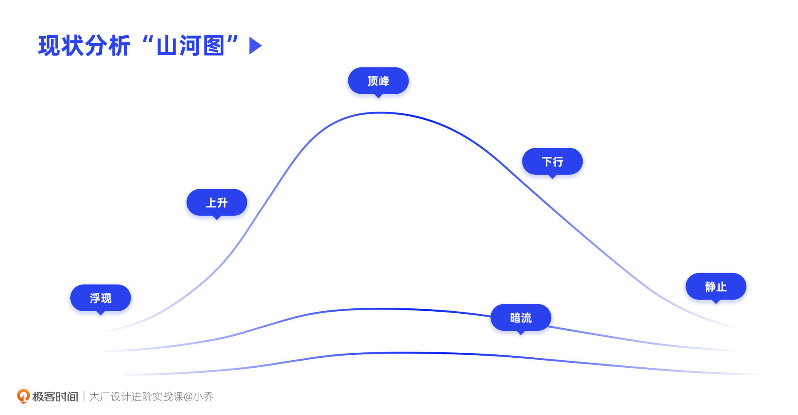
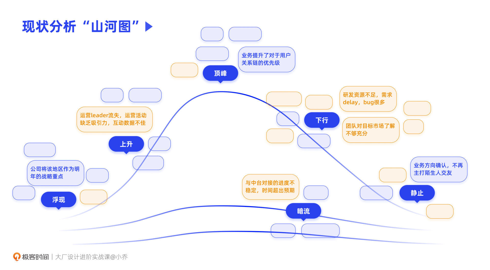
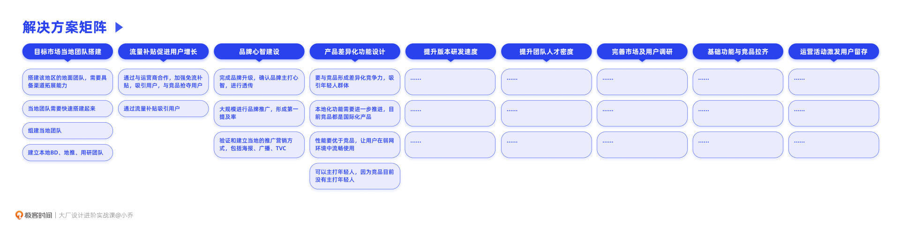
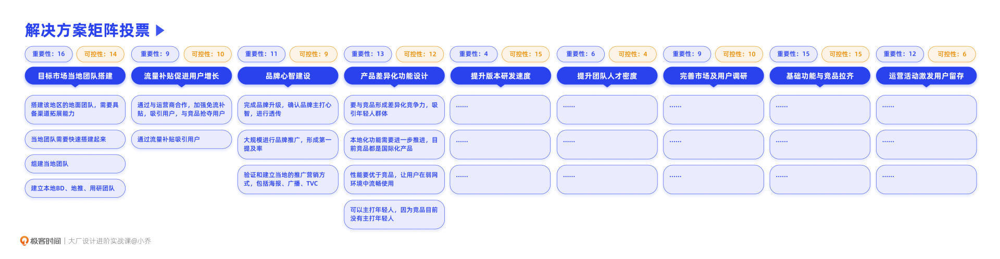
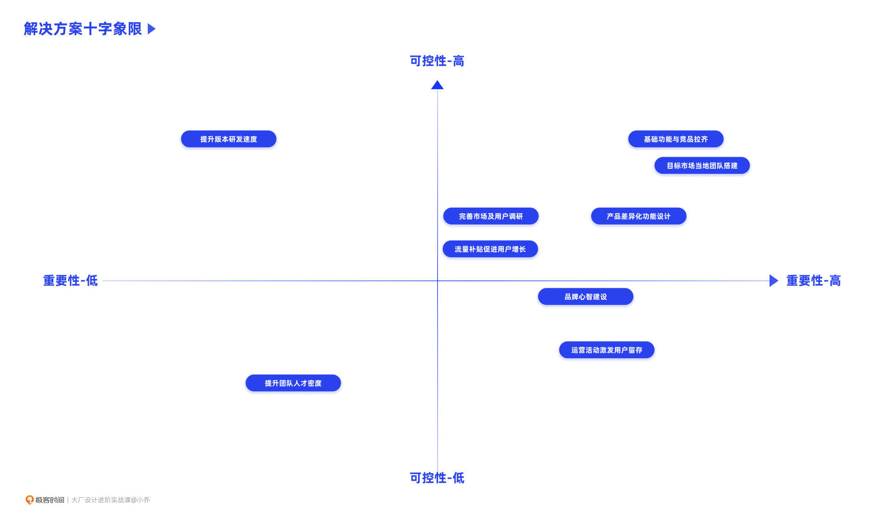

- 00 开篇词 升维思考，是设计师有效成长的第一步.md.html
- 01 业务周期：0-1-10-100-N的发展策略.md.html
- 02 商战模式：如何在商业竞争下突出重围？.md.html
- 03 市场洞察：如何找寻差异化撬动支点？.md.html
- 04 用户洞察：不懂用研的设计师不是好职场人.md.html
- 05 用户画像：是形式主义还是真的有效？.md.html
- 06 用户旅程：挖掘不同用户的核心机会点.md.html
- 07 职场晋升：看懂晋升的“游戏规则”.md.html
- 08 设计价值升级：五层进阶突破成长.md.html
- 09 基础价值 核心三原力：如何将需求转化为设计稿？.md.html
- 10 基础价值 第一性原理：从问题本质解决问题.md.html
- 11 基础价值 设计复盘：只是量化设计结果吗？.md.html
- 12 二级价值 负向网兜：如何全面发现负向问题？.md.html
- 13 二级价值 设计自驱：如何做好项目Owner？.md.html
- 14 二级价值 自驱合作：如何反内卷处理合作关系？.md.html
- 15 三级价值 增长误区：思维惯性陷阱和虚荣数据.md.html
- 16 三级价值 用户增长历程：AARRR是万能的吗？.md.html
- 17 三级价值 产品增长：如何做好产品创新？.md.html
- 18 三级价值 运营增长：如何自驱营销活动和投放？.md.html
- 19 三级价值 品牌增长 抢占心智，赢得人心红利.md.html
- 20 三级价值 增长实操：如何“步步为营”推动落地？.md.html
- 21 四级价值 L型赋能：让T型人才发挥更大价值.md.html
- 22 四级价值 “网状对比”解决共性痛点.md.html
- 23 五级价值 商业画布：设计师可以担任业务方吗？.md.html
- 24 五级价值 共创洞察：如何做好一次完善的workshop？.md.html
- 25 五级价值 领导力觉醒：写给新晋管理者.md.html
- 26 工作选择（上）：2B or 2C设计师？如何规划领域？.md.html
- 27 工作选择（下）：大厂 or 小厂？如何选择赛道？.md.html
- 28 人才地图：认知自我，成为高潜力人才.md.html
- 29 成长历程：如何从设计小白成长为团队负责人？.md.html
- 30 冰山模型：如何成为让面试官欣赏的“面霸”？.md.html
- 31 作品集指导：什么是面试官喜欢的作品集？.md.html
- 用户故事 什么是职场设计师进阶的正确姿势？.md.html
- 结束语 突破自我，成人达己.md.html
- 捐赠
24 五级价值 共创洞察：如何做好一次完善的workshop？
你好，我是小乔。
上节课我们了解了前置设计角色的重要性，也一起学习了被众多企业家力捧的商业模式画布。当我们逐渐把设计师的角色前置，话语权提升，就更有机会参与到业务的规划中。
在做业务规划时，业务目标、现状问题、解决方案等方面，都需要充分讨论，才能让规划更加全面可行。这个过程，就可以通过workshop来进行。有时候业务的负责人会邀请企业内的组织管理专家来主持，或者邀请行业内的咨询公司来做workshop，但更多的时候，会由业务的决策者们自己组织完成。
Workshop，也叫参与式工作坊，通过共创的方式达到活动目标。相比于激发灵感的头脑风暴来说，它会更有逻辑性，可落地性也会更强。
Workshop的形式，分为企业内部的workshop和与用户一起共创的workshop。通常前者更为严肃，用来制定业务规划，而后者轻松有趣，常常在游戏中获得机会点。这节课，我们就来学习如何做好一次完善的workshop。这对于我们规划自驱项目，或者和业务方共创项目，都非常实用有效。
企业内部workshop的实战方法
一次完整的企业内部workshop，主要分为4个步骤：确认人选、目标澄清、现状分析和策略制定。接下来我们一步步来讲解。
步骤1：确认参会人选
在开展workshop之前，我们首先要确认参会人选。具体人选，要根据本次workshop的目标而定。比如，我们这次workshop是为了确认业务在未来一年的发展规划，因为涉及到整体业务，就要尽量包含所有职能的关键角色，比如运营、产品、设计、开发、算法、战略等职能的负责人。每位负责人代表的视角不同，会更有利于全面规划业务。
那除了负责人以外，还要加上其他同学吗？是不是人数越多，准确性越高呢？
其实人数并不是越多越好，人数过多会影响效率和准确性。Workshop的人数通常以10-20人为佳。也许有同学希望自己处于一个坦诚清晰、开放透明的企业，希望所有的信息公开透明，由民主决策。但往往全民决策会因为许多缺乏判断力的建议，导致效率极低，甚至决策错误。因此，在参会人选上，以各职能负责人和预备管理者参与为佳，因为他们往往具备更准确的判断力。
也许有同学会问，小乔姐姐，我不是设计总监，连设计组长都不是，还需要学习这个方法吗？
其实是需要的，因为workshop对于我们制定项目规划也十分有效。比如，我们虽然不需要决策淘宝明年该怎么做，但我们如果自驱了项目，要制定新零售工具或者AR试穿这个项目的规划，那么对于这个项目有决策权的同事就都应该参加。大家也许都不是团队管理者，但却是这个项目不同职能的负责人。
所以，当我们学习到新方法后，一定要懂得融会贯通，发挥联想运用能力，找到自己项目上可以实践的机会。不要像个不够智能的机器人一样，非要等到一模一样的情况下再死板照抄、生搬硬套。
确定人选之后，就要约好时间、地点开展workshop。通常一个日常项目的讨论只需要半天，但如果是制定某业务明年的规划，类似这样的颗粒度就需要至少1天时间。在发布时间和地点的同时，也要将分组名单提前安排好。通常workshop会分为3-5组不等，分组时要将相同职能、相同级别的同学交错打散，让每一个小组的构成都更为多元。
步骤2：目标澄清
当约定时间到来，就可以正式开启workshop了。这里，我以一个具体项目作为案例来帮助你理解。
假设我们现在在负责一个社交产品，这个产品明年会拓展新的海外市场。那么这次的workshop，就是为了制定该产品明年在这个新市场的发展规划。
开启worshop的第一个环节，就是优先对齐明年的项目目标。因为只有对齐目标，才能从目标出发，探讨问题和解决方案。
通常，业务负责人已经和更高层确认好了业务目标，比如明年在这个新市场的DAU渗透率要达到这个国家联网人口的30%，聊天渗透率要达到40%等等。
对于参会的人员来说，可能并不完全清楚这些目标和指标制定的逻辑，甚至有可能对目标存有质疑，觉得目标过于激进或者过于简单。这个环节，就是为了让在场的各位决策者们都能明白目标制定的原因，并且在讨论中达成共识。
比如，有人会质疑，Twitter在这个国家的DAU渗透率都只有20%，我们真的能做到30%吗？或者，为什么要主推聊天渗透率，不主打其他社交方向，比如帖子发布率、互动率等等？
业务负责人则需要针对这些问题充分解释清楚，从而让各职能的决策者都能理解公司战略层对于这个业务的要求和目标。如果大家无法对业务目标达成共识，那么也很难在未来凝聚成一股力量，达成共同目标。
步骤3：现状分析
在已经对目标达成共识后，就可以针对目标拆分解决方案了。但在思考解决方案之前，需要各职能对业务现状和问题充分理解，才能有针对性地去拆解方案。
首先，可以让每位参会者写下5条以上业务现状，可以是优势也可以是问题，这个数量并不是固定的，只是建议数量。接下来，让每个小组内部充分交流讨论，每个组选出最有共识的现状，不超过10条，这个过程有助于大家在发散过后收拢重心。
每个组挑选出10条以内的现状之后，会发现有的是优点，有的是缺点，有的情况在未来会越来越严重，有的问题在未来会逐渐减弱。
如果我们有4个小组，那就有将近40个现状。那这些现状，我们又该关注哪些呢？为了更加清晰，我要向你推荐一个可视化工具，我称它为“山河图”。

山河图主要由6个部分组成：
- 浮现：这个现状刚刚出现苗头，未来有加重的趋势；
- 上升：这个现状正在逐渐加重，且还会持续加重；
- 顶峰：这个现状已经达到了最大阀值，之后会逐渐减弱；
- 下行：这个现状已经在逐渐减轻，且未来还会持续减轻；
- 静止：这个现状目前已经发展到尾声，之后将不再发生巨大变化；
- 暗流：暂且难以判断这个现状的发展趋势，也许会蓬勃发展，也许会销声匿迹。
根据这6个部分，不同小组就可以将自己组内选出的10条现状贴到相应的位置，问题风险相关的现状可以换一个颜色标出，引起大家的共同关注。这样贴完之后就会一目了然。

我们举例来说，最近运营leader离职了，运营活动质量显著下降，互动数据不佳，并且短期内没有那么容易招聘到一个满意的新leader，那么这条现状就会放在“上升”部分；再来，业务之前一直在做陌生人方向，最近终于确定不再以陌生人社交为主了，那这条就在“静止”部分。
通过“山河图”，大家可以很清晰地明白哪些情况在越来越好，哪些情况在越来越糟糕。以上图为例，我们看到“下行”部分的橙色内容最多，这其实是个好现象，说明各种问题正在逐渐消失，业务也在越来越好。
步骤4：策略制定
在达成目标共识、充分理解现状过后，就到了最为激动人心的步骤：策略制定。
和上一步骤同理，组内的每个成员需要写下5条以上解决方案，以克服问题，达到业务目标和指标。接下来，组内充分讨论，互相激发和优化各自的解决方案，并将相似的解决方案进行整合。
每个组各自讨论完毕后，就到各组一起交流的时候了。每个小组可以轮流发言，并将各组的解决方案贴在共创文档里或者白板上，当听到同一类型的解决方案时，就归纳整合在一起。每个小组都分享完毕后，我们就会得到一张分好类的大图。
如下图所示，一共归纳出9大类解决方案，下面是每个组提出的具体方案，形成了解决方案矩阵。

接下来，针对这些解决方案，就可以排列出优先级。还记得我们曾经讲过如何排列需求的优先级吗？这里也是同理，根据业务目标，会从重要性、紧急度、可控性、成本、营收、创新性等维度进行打分，再综合计算每个大类的分数，分数高的则优先处理。如果这些维度之间也有优先级之分，那在计算总和时，还需要在每个维度上再乘以权重。
在这里，我想向你介绍另一种排列优先级的方法，就是投票。投票的方法，一般不建议用在工作中，因为当人数很多时，真理不一定在多数人手上。为什么我们在这里可以投票决策呢？这其实又一次验证了我们开设workshop，需要有决策能力和强判断力的人员参加，因为这样的投票才是有效的、准确率高的。
比如，我们先要求每个人对重要性投票，重要性就是有效程度，通过这个解决方案可以有效达成目标，那这个方案就是重要的。我们让每位参会者投3个最能达成目标的选项，当然，这个数字也不是固定的，可根据方案归类的总数量进行调整。
我们回到步骤2中海外社交项目的案例来继续讲解。因为这个业务在新国家入局并不是一件容易的事情，会受到国家政策、当地运营商的配合程度、当地团队搭建难度、对当地的了解情况等各方面制约，因此，可控性也是重要的衡量条件。当对可控性也投票之后，就可以得到以下数字。

如果只有两个维度，没有更多维度要考虑，就可以通过十字象限法进行定位。根据参会者在重要性和可控性上的打分，把各项解决方案画在十字象限中。由下图可知，优先应当关注右上角这个象限的解决方案，接着关注左上角和右下角，最后再关注左下角。

到此为止，全部参会人员就共创完成了本次workshop，且在整个过程中，都在不断拉齐认知，最终达成了共识。
与用户共创的workshop
探讨完如何开展企业内部的workshop后，我们再来讲讲与用户共创的workshop方法。
如果我们做工作坊的目的并不是产出严肃的业务规划，而是想拉着用户一起共创，根据某个命题收集一些有效洞察，并让用户感受到我们的企业文化，那就可以采用还原场景、实践探索的方式来开展workshop。
比如，车企可以和用户一起探讨车友会的服务，消费升级型业务可以和用户探讨人们在收入不同时消费结构的变化，母婴业务可以和宝爸宝妈们一起探讨照顾儿童的诉求等等。这样的workshop通常会非常轻松有趣，在愉快的共创氛围中达到目的。
整个流程和我们上文讲的4个步骤一致。首先是确认参会人选。在真实用户中，筛选一些符合本次探讨命题的用户，向他们发出邀请，同时表明本次workshop的目的，通常这样的workshop也会配有茶歇和可带走的小礼品，吸引用户参与。
第2步是目标澄清。在workshop开场前做好分组，让每个小组的参会者围坐在一起。开始后，主持人首先表明本次活动的目的，共同探索一个命题，并且表达企业对于用户观点的重视，欢迎用户共创，这也是一次宣传企业文化的好机会。
第3步是分析现状。可以给每个组发一些帮助探索的道具，比如大张的图纸、彩色笔、橡皮泥、积木、乐高等，鼓励参会者使用这些道具还原真实场景。
举个例子，在咨询行业时，我们曾组织过一次对外的行业分享大会，以消费升级为主题。其中有个环节就是workshop，让听众真实地感受消费升级对自己的消费结构产生的变化。
当时我们的道具就是示意用的纸钱，分发给每个组，然后在大纸上画好衣食住行、投资、理财、教育、娱乐等各方面的分区。当月薪分别为3千元，3万元，30万元时，每个小组共同讨论如何分配消费，将多少钱放置在哪个区域，从而观察消费升级对消费结构的分配变化。
第4步是策略制定。前面的实践过程，会引发出大家的一些思考和问题，也会有一些明确的用户需求被发现，此时就可以一起探索解决方案。这个过程和企业内部workshop的方法一致。
比如，对车友来说，熟悉的都是同一个城市的车友，但如果去另一个城市，又如何与当地的车友链接，获得在新城市旅游的帮助呢？对多项解决方案的有效性、车友意愿度等维度打分后，也许就会得出，可以在车友会的App中提供发出旅行单和接收旅行单的功能，让车友们链接。
今日小结
今天，我们一起学习了开展workshop的全流程。企业内部的workshop主要有两个作用，一个是完成本次workshop讨论的议题目标，另一个是让各职能的决策者都达成共识；与用户共创的workshop也有两个作用，一个是通过用户发现机会点，另一个是向用户传播企业文化。
开展workshop分为4个步骤，分别是：确认参会人选、目标澄清、现状分析和策略制定。这是一个循序渐进的过程，先将目标拉齐后，才能探讨针对目标的现状、问题，进而讨论解决方案。我们也在这节课学习了两种判定优先级的方式，一种是曾经学过的matrix打分法，另一种就是这节课讲解的投票法。
从目标出发，拆分解决方案，这个过程，你是否觉得十分熟悉？
没错，这个过程像极了我们曾经讲过的项目复盘方法和四步拆解法。
你会发现，古今中外的各种推导分析方法，不管是经典的方法论还是根据时代变迁总结的新创方法论，底层逻辑都是相似的。因此，具体的方法会根据时代发展不断优化，但更重要的是，你能理解从目标到解决方案的拆分逻辑，说不定在未来，你还可以新创出更适合行业的方法论。
互动时刻
回顾你过往的工作经历，是否参加过人员众多，七嘴八舌讨论，却无法收拢结论的低效会议？学完这节课的你，打算怎么做呢？
欢迎把你的经历和思考在留言区分享出来，与我和其他同学一起探讨。我们建了一个读者交流群，欢迎你的加入！如果你觉得有所收获，也欢迎把文章分享给你的朋友一起学习。我们下节课见。
© 2019 - 2023 Liangliang Lee. Powered by gin and hexo-theme-book.